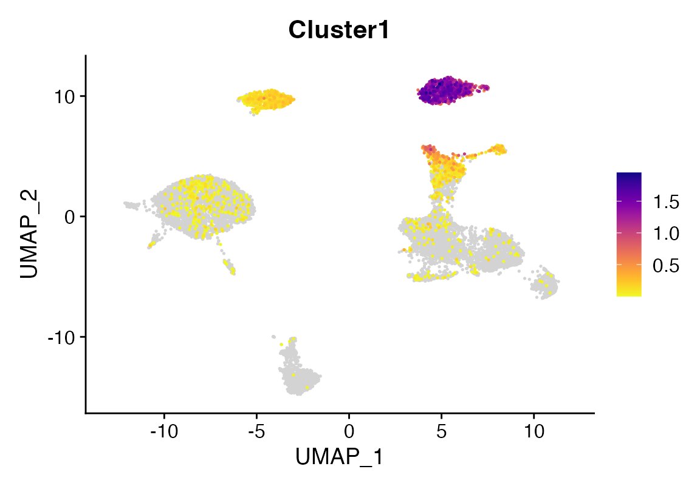
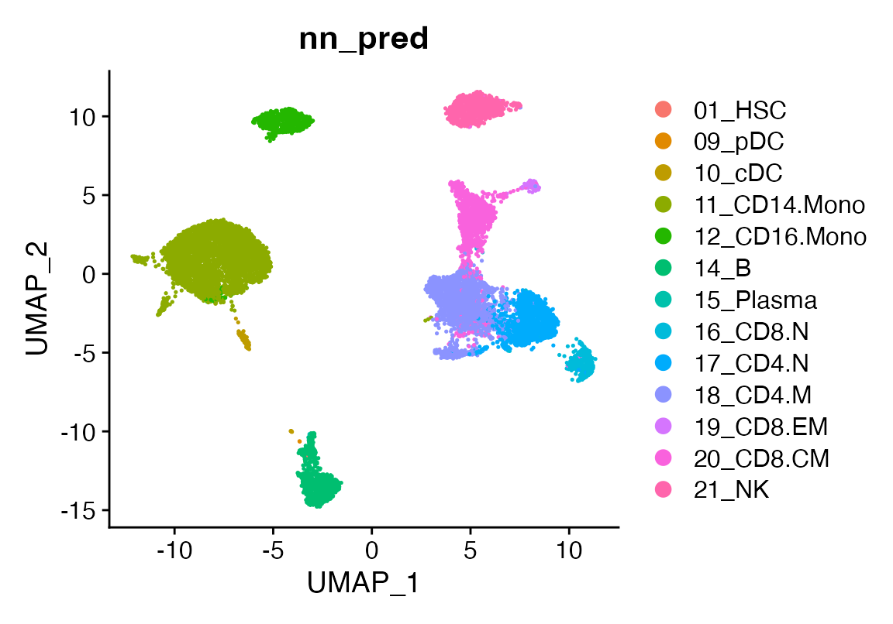
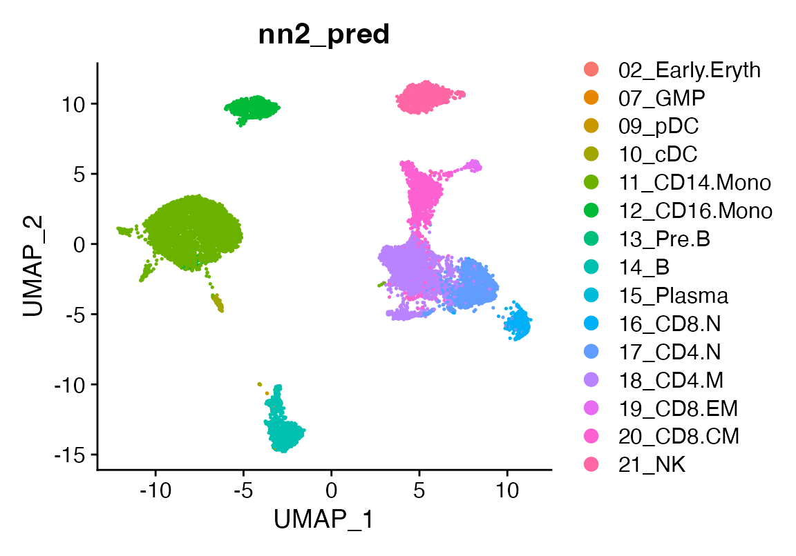

A deeper look at viewmastR
2024-08-08
InDepth.RmdA Deeper Look at viewmastR
Before diving into how viewmastR works, let’s first set
up the necessary environment and go through essential functions to
streamline your training and analysis workflow.
1. Installing Rust
Before using viewmastR, you’ll need an updated
installation of Rust, as it’s a core dependency. Follow
the instructions on the official Rust installation
page to set up Rust on your system.
2. Installing viewmastR
Once Rust is installed, you can install viewmastR
directly from GitHub. Ensure you have the devtools package
installed, and then use the following command:
devtools::install_github("furlan-lab/viewmastR")3. Viewing the Training History
viewmastR tracks key data during the training process,
which can be accessed by setting the return_type parameter
to "list". This returns: 1. The query object with predicted
cell types. 2. The training results.
Here’s how you can retrieve and visualize the training data:
suppressPackageStartupMessages({
library(viewmastR)
library(Seurat)
library(ggplot2)
library(scCustomize)
library(plotly)
})
# Load query and reference datasets
seu <- readRDS(file.path(ROOT_DIR1, "240813_final_object.RDS"))
vg <- get_selected_features(seu)
seur <- readRDS(file.path(ROOT_DIR2, "230329_rnaAugmented_seurat.RDS"))
# View training history
output_list <- viewmastR(seu, seur, ref_celldata_col = "SFClassification", selected_features = vg, return_type = "list")Visualizing Training Data
To plot training vs validation loss, you can use the following:
plot_training_data(output_list)For rendering the plot without details:
plt <- plot_training_data(output_list)
pltTip: If the training loss decreases while the validation loss plateaus, it may indicate overfitting.
4. Tuning for Speed
viewmastR runs with 3 available backends (see Burn
for more details). In our hands the nd backend tends to run
faster on Apple M1/M2 processors. Note that using “auto” for the backend
parameter (which is the default) will detect architecture and provide
our best guess which backend will be the fastest for you. But if you
want to test yourself, here’s how you can compare the performance of
different backends on your system:
run1 <- viewmastR(seu, seur, ref_celldata_col = "SFClassification", selected_features = vg, max_epochs = 3, backend = "candle", return_type = "list")
run2 <- viewmastR(seu, seur, ref_celldata_col = "SFClassification", selected_features = vg, max_epochs = 3, backend = "wgpu", return_type = "list")
run3 <- viewmastR(seu, seur, ref_celldata_col = "SFClassification", selected_features = vg, max_epochs = 3, backend = "nd", return_type = "list")
# Compare training times
gp<-ggplot(data.frame(training_times = c(run1$training_output$duration$training_duration,
run2$training_output$duration$training_duration,
run3$training_output$duration$training_duration),
backend = c("candle", "wgpu", "nd")),
aes(x = backend, y = training_times, fill = backend)) +
geom_col() +
theme_bw() +
labs(x = "Backend", y = "Training Time (s)") +
NoLegend() + ggtitle(paste("Arch: ", as.character(Sys.info()["machine"])))
ggplotly(gp)5. Saving Training Subsets
To inspect the training and test data used by viewmastR
we provide the setup_training function if you so desire to evaluate
these using other learning frameworks.
ti <- setup_training(seu, seur, ref_celldata_col = "SFClassification", selected_features = vg, return_type = "matrix", backend = backend)
# Convert labels to max class and save them
train_label <- apply(ti$Ytrain_label, 1, which.max)
test_label <- apply(ti$Ytest_label, 1, which.max)
# Save training data and labels
writeMMgz(as(ti$Xtrain_data, "dgCMatrix"), "/path/to/train.mm.gz")
writeMMgz(as(ti$Xtest_data, "dgCMatrix"), "/path/to/test.mm.gz")
writeMMgz(as(ti$query, "dgCMatrix"), "/path/to/query.mm.gz")
data.table::fwrite(data.frame(train = train_label), "/path/to/train_labels.tsv.gz", compress = "gzip")
data.table::fwrite(data.frame(test = test_label), "/path/to/test_labels.tsv.gz", compress = "gzip")6. Analyzing Probabilities
Run inference and obtain prediction probabilities:
training_output <- viewmastR(ref_cds = seur, ref_celldata_col = "SFClassification", selected_features = vg, max_epochs = 3, train_only = T)
# Obtain prediction probabilities
seu <- viewmastR_infer(seu, model_dir = training_output[["model_dir"]], selected_features = vg, labels = levels(factor(seur$SFClassification)), return_probs = TRUE)
scCustomize::FeaturePlot_scCustom(seu, features = "prob_19_CD8.EM")7. Evaluating Model Weights
To inspect model weights (note this only works for mlr - see below):
dir <- "/tmp/sc_local"
wmat <- get_weights(dir)
top_NK_genes <- rownames(wmat)[sort(wmat$'21_NK', index.return=T, decreasing=T)$ix[1:20]]
seu <-AddModuleScore(seu, features = list(top_nk_genes=top_NK_genes))
FeaturePlot_scCustom(seu, features = "Cluster1")
8. Comparing Different Algorithms
viewmastR supports various algorithms, such as a
pseudo multinomial logistic regression (mlr),
multinomial naive bayes (nb), and a multi-layer
perceptron (nn). You can read more about the similarity between
this simple neural network and logistic regression here (https://medium.com/@axegggl/neural-networks-decoded-how-logistic-regression-is-the-hidden-first-step-495f4a0b5fd#:~:text=When%20you%20think%20about%20a,like%20a%20logistic%20regression%20model.)
The code below shows how you can run and compare these methods:
seu <- viewmastR(seu, seur, ref_celldata_col = "SFClassification", FUNC = "mlr", query_celldata_col = "mlr_pred", selected_features = vg, max_epochs = 3)
seu <- viewmastR(seu, seur, ref_celldata_col = "SFClassification", FUNC = "nb", query_celldata_col = "nb_pred", selected_features = vg)
seu <- viewmastR(seu, seur, ref_celldata_col = "SFClassification", FUNC = "nn", query_celldata_col = "nn_pred", selected_genes = vg, hidden_layers = c(200), max_epochs = 3)
seu <- viewmastR(seu, seur, ref_celldata_col = "SFClassification", FUNC = "nn", query_celldata_col = "nn2_pred", selected_genes = vg, hidden_layers = c(1000, 150), max_epochs = 3)
# Visualize predictions
DimPlot(seu, group.by = "mlr_pred")
DimPlot(seu, group.by = "nb_pred")
DimPlot(seu, group.by = "nn_pred")
DimPlot(seu, group.by = "nn2_pred")
# Evaluate accuracy
accuracy_mlr <- length(which(seu$mlr_pred == seu$ground_truth)) / dim(seu)[2]
accuracy_nb <- length(which(seu$nb_pred == seu$ground_truth)) / dim(seu)[2]
accuracy_nn <- length(which(seu$nn_pred == seu$ground_truth)) / dim(seu)[2]
accuracy_nn2 <- length(which(seu$nn2_pred == seu$ground_truth)) / dim(seu)[2]
# Compare accuracies
gp<-ggplot(data.frame(accuracy = c(accuracy_mlr, accuracy_nb, accuracy_nn, accuracy_nn2)*100,
algorithm = c("mlr", "nb", "nn","nn2")),
aes(x = algorithm, y = accuracy, fill = algorithm)) +
geom_col() +
theme_bw() +
labs(x = "Algorithm", y = "Accuracy (%)") +
NoLegend()
ggplotly(gp)